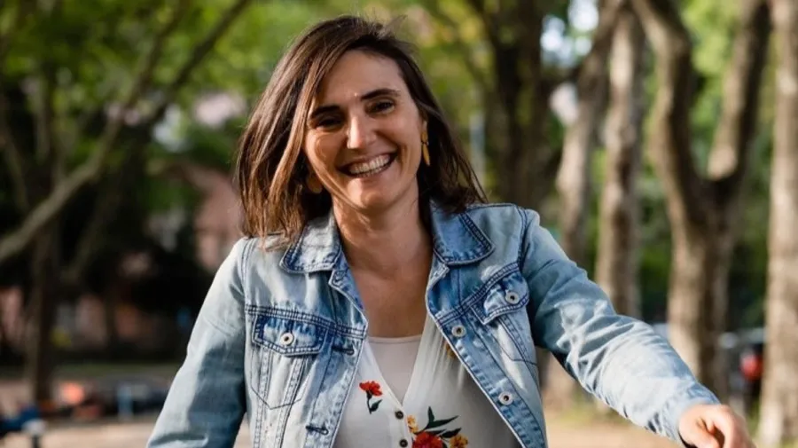
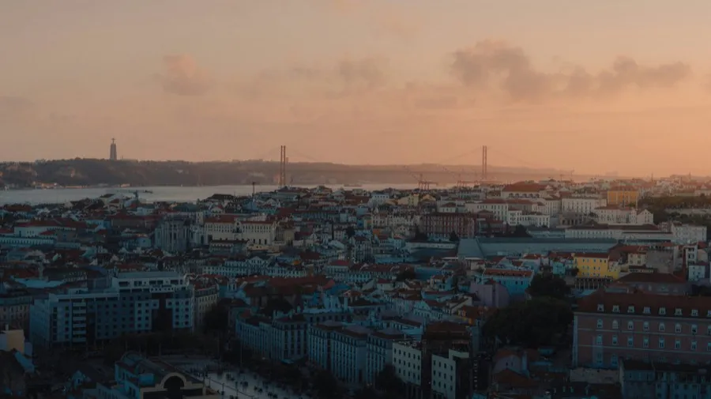
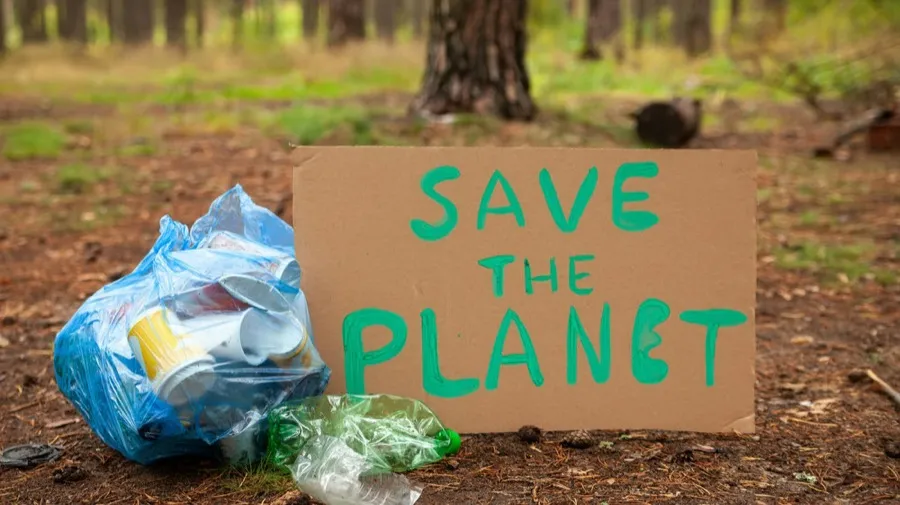

Início / Blog
Blog
Bastidores das entrevistas, referências e contexto extra sobre os temas que aparecem no podcast — para quem quer ir além do áudio.

EpisódioEconomia Circular
Episódio: Avaliação do Ciclo de Vida
Em conversa com Jade Muller, especialista em Avaliação do Ciclo de Vida (ACV), exploramos a metodologia que permite compreender o verdadeiro custo ambiental de tudo o que produzimos e consumimos.

Episódio
Episódio: Economia do Bem-Estar
Com a Dra. Susana Fonseca, da ZERO, conversamos sobre como colocar o bem-estar humano no centro das políticas e práticas económicas.

Episódio
Episódio: Vivendo com o mínimo
A 2ª temporada estreou com foco em minimalismo, ao lado de Ana Milhazes, criadora do Lixo Zero Portugal e autora de "Vida Lixo Zero".

Novidades
FuSu recebe Menção Honrosa no Prémio Fundação EDP
O FuSu recebeu uma Menção Honrosa no prémio Escola da Energia | Fundação EDP, entre dezenas de candidaturas de norte a sul do país.

Novidades
O FuSu está de volta!
A 2ª temporada chegou cheia de ideias e conversas inspiradoras — com Ana Milhazes, Susana Fonseca, Jade Müller, Tayane Belém e António Coutinho.

Conceitos
Sustentabilidade: Uma missão
Sustentabilidade busca equilíbrio entre meio ambiente, economia e sociedade — e depende de governos, empresas e de cada um de nós.

Conceitos
Antropoceno. É de comer?
A era geológica em que a atividade humana passou a moldar o planeta — e o que isso exige de nós.